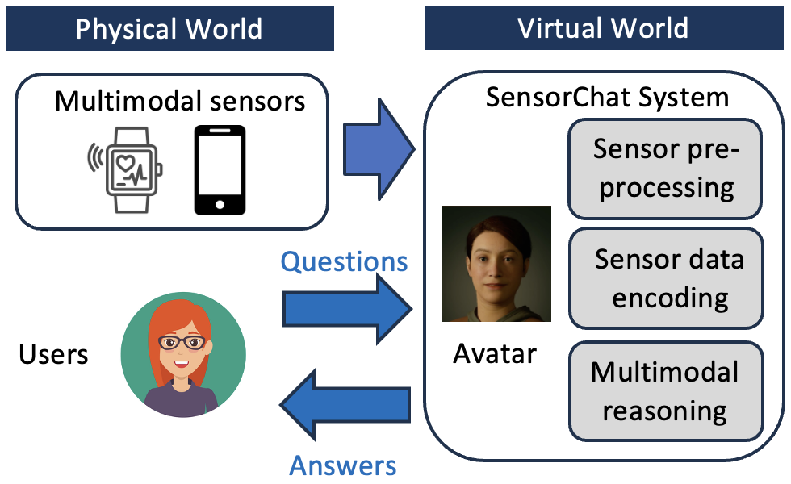

[Photo credit: Hui Shi]
Xiaofan Yu (于晓凡)
Assistant Professor, Department of Electrical Engineering
University of California, Merced
E-mail: xiaofanyu@ucmerced.edu
Office: Science and Engineering Building 2 (SE2) Room 382
I am an Assistant Professor in the Department of Electrical Engineering at University of California, Merced. I received my Ph.D. degree from University of California, San Diego in 2025, advised by Prof. Tajana Šimunić Rosing. Prior to joining UCSD, I received my B.S. degree from Peking University, China in 2018. I am honored to have been selected as an ML&Systems Rising Star in 2024, a CPS Rising Star in 2023, and an EECS Rising Star in 2022.
Much of my work is driven by collaborations with various academia and industry researchers (full collaboration list).
For more details, see my CV.
Research Involvement in Centers and Grants
During my PhD, I am fortunate to have been involved with the following research centers and funding sources:
- CoCoSys: Center for the Co-Design of Cognitive Systems, one of seven Joint University Microelectronics Program (JUMP) 2.0 academic research centers co-sponsored by the Semiconductor Research Corporation (SRC) and Defense Advanced Research Projects Agency (DARPA)
- PRISM: Processing with Intelligent Storage and Memory, also one of seven JUMP 2.0 academic research centers co-sponsored by SRC and DARPA
- TILOS: The Institute for Learning-Enabled Optimization at Scale, a National Artificial Intelligence (AI) Research Institute funded by the National Science Foundation (NSF)
- MLWiNS: NSF/Intel Partnership on Machine Learning for Wireless Networking Systems
- National Science Foundation Grants #1826967, #2100237, #2112167, #1911095, #2120019, #2211386
Research Collaborations
Thanks to the support from these funding projects, I had the opportunity to lead several key collaborations, which contributed to the majority of my PhD publications:
Collaboration on Robotics
- Collaboration with Prof. Vijay Kumar (UPenn)
In this collaboration through TILOS, we aim at enabling adaptable and collaborative perception in multi-agent systems via federated learning. Our method dynamically learns a model on multiple drones. The model takes camera images as input and predicts the future trajectories of all targets in view.
Collaboration on Natural Language Processing
- Collaboration with Prof. Larry Heck (GaTech)

In this collaboration through CoCoSys, we aim at enabling natural language interactions between humans and sensors. To address the drawbacks in previous designs that only dealt with limited question/answer types and sensor time windows, we create the first dataset for this task and develop a pioneering system for real-time interactions.
Publications: SenSys'24, SenSys'25, arXiv'25
Collaboration on Machine Learning
- Collaboration with Prof. Arya Mazumdar (UCSD)

In this collaboration through TILOS, we focus on optimizing Federated Learning in IoT networks under data and network heterogeneities. We design theoretically sound and practical system solutions, testing them on a real-world testbed with 40 clients built on Raspberry Pis and CPU clusters.
Publications: IoTDI'23 - Collaboration with Prof. Yunhui Guo (UT Dallas) and Prof. Prof. Sicun Gao (UCSD)
In this collaboration, we focus on designing lifelong (continual) learning algorithms on edge devices in adaptation to the real-world distribution drifts. We design several new unsupervised lifelong learning algorithms for class-incremental streams, which demonstrate up to 53.7% linear accuracy improvements over state-of-the-art methods.
Publications: WACV'24, CVPRW'23, MSN'20
Collaboration with Industry
- Collaboration with Intel Labs

In this collaboration through MLWiNS, we design new Hyperdimensional Computing (HDC) algorithms for various real-world challenges and applicatons. Our HDC design achieves similar or even better accuracy compared to the state-of-the-art neural network baselines, while improving energy efficiency by up to 34.3x.
Publications: IPSN'24, DATE'24, ASP-DAC'23, MobiCom'22 - Collaboration with Arm Research
In this long-term collaboration with Arm Research, we work on optimizing the long-term reliability of IoT networks via sensor deployment and network optimization. Our proposed strategy saves up to 40% of maintenance cost compared with existing deployment heuristics under the same sensing quality.
Publications: IoTDI'23, TNSM'22, CNSM'21, CNSM'20, TCAD'20, ICIOT'20